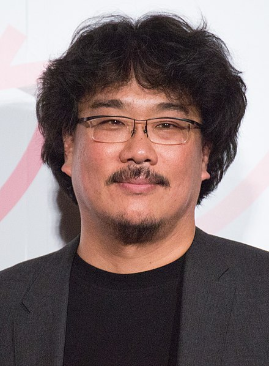

Parasite (2019)
Bong Joon-ho Called Subtitles a 'One-Inch Barrier' The movie Parasite has become a worldwide phenomenon, especially after sweeping the Academy Awards
and taking home the highly coveted Best Picture award in 2020. It made history as the first non-English film to earn an Oscar.
Synopsis

Jobless, penniless, and, above all, hopeless, the unmotivated patriarch, Ki-taek, and his equally unambitious family--his supportive wife, Chung-sook; his cynical twentysomething daughter, Ki-jung, and his college-age son, Ki-woo--occupy themselves by working for peanuts in their squalid basement-level apartment.
Then, by sheer luck, a lucrative business proposition will pave the way for an ingeniously insidious scheme, as Ki-woo summons up the courage to pose as an English tutor for the teenage daughter of the affluent Park family. Now, the stage seems set for an unceasing winner-take-all class war. How does one get rid of a parasite?
- Read more about the movie here.
- More movies of Bong Joon-ho.
Director: Bong Joon-ho

Bong Joon-ho[a] (Korean: 봉준호, Korean pronunciation: [poːŋ tɕuːnho → poːŋdʑunɦo]; born September 14, 1969) is a South Korean filmmaker. His films feature social themes, genre-mixing, black humor, and sudden tone shifts.[1] In 2017, Metacritic ranked Bong 13th on its list of the 25 best film directors of the 21st century.[2]
He first gained recognition for his second feature film, the crime drama Memories of Murder (2003), before achieving commercial success with his subsequent films; the monster film The Host (2006), the science fiction action film Snowpiercer (2013), and the black comedy thriller Parasite (2019), which are among the highest-grossing films in South Korea.[3]
Two of his films have screened in competition at the Cannes Film Festival—Okja in 2017 and Parasite in 2019; the latter earned the Palme d'Or, which was a first for a South Korean film.[4][5] For Parasite, Bong received Academy Awards for Best Picture, Best Director, Best Original Screenplay, and, on behalf of South Korea, Best International Feature Film.[6][7]
Awards:
- Oscar
- Cannes
- Cannes
Filmography
- Parasite
- Okja
- Sea Fog